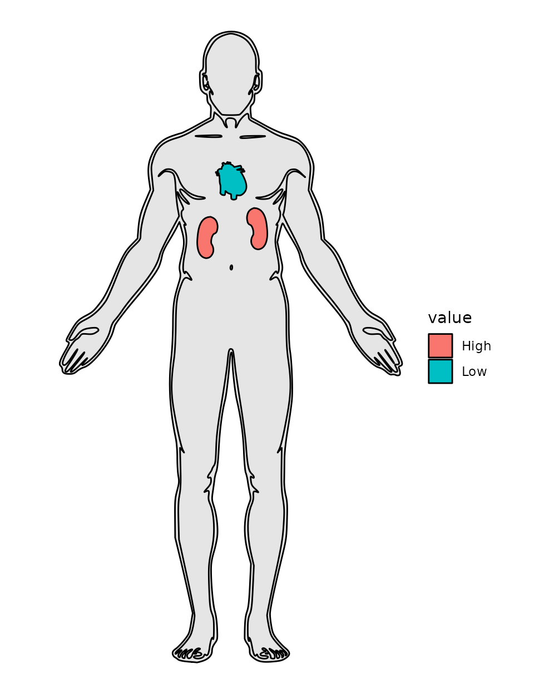
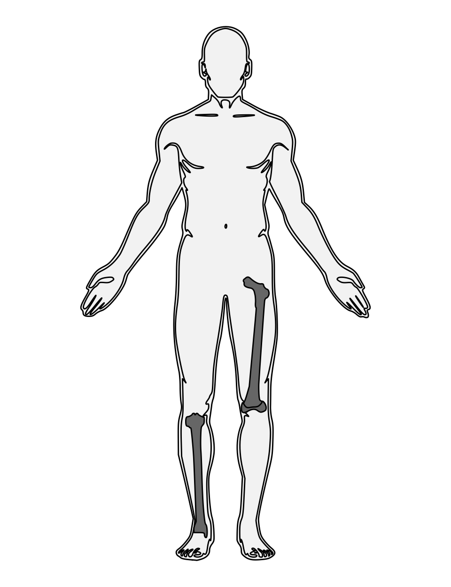
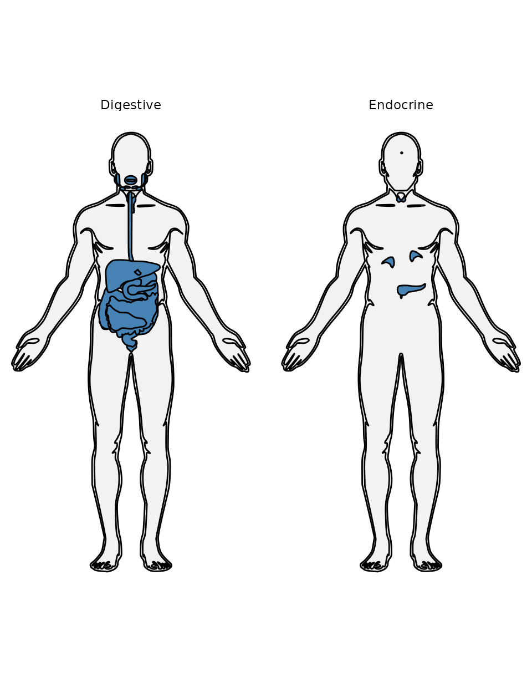
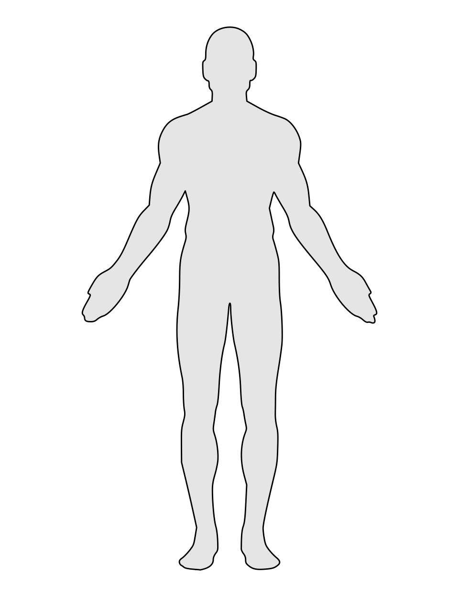

anatomogramdata is a data package, not a plotting
package: it ships tidy, ontology-tagged human anatomogram
polygon data (hgMale/hgFemale), parsed
directly from the EBI
Expression Atlas anatomogram source — not a frozen hardcoded
snapshot. There is no custom geom; you plot the bundled data with
ggplot2::geom_polygon() or ggplot2::geom_map()
directly, which already provide full aesthetic flexibility.
anatomogram_select() is the package’s single entry point
for browsing, selecting, and filtering that data. It has three mutually
exclusive modes.
Browse mode
Call it with no arguments to see what’s available — every tissue and which organ system(s) it belongs to:
head(anatomogram_select("male"))
#> tissue_id tissue_name system
#> 1 CL_0000084 <NA> Lymphatic/Immune
#> 2 CL_0000233 <NA> Cardiovascular
#> 3 CL_0000236 <NA> Lymphatic/Immune
#> 4 CL_0000576 <NA> Lymphatic/Immune
#> 5 CL_0000623 <NA> Lymphatic/Immune
#> 6 CL_0000738 leukocyte Lymphatic/Immune
unique(anatomogram_select("male")$system)
#> [1] "Lymphatic/Immune" "Cardiovascular" "Respiratory" "Endocrine"
#> [5] "Integumentary" "Digestive" "Reproductive" "Nervous"
#> [9] "Muscular" "Urinary" "Skeletal"Organ mode: select specific organs, optionally with values
Pass organs as a character vector. Each element is
matched either as a literal ontology ID
(e.g. "UBERON_0000948") or fuzzily (case-insensitive,
partial) against the tissue name. Name an element to attach a value to
it — useful for fill:
d <- anatomogram_select("male", organs = c(kidney = "High", heart = "Low"))
ggplot(d, aes(x, y, group = group)) +
geom_polygon(data = subset(d, tissue_id == "outline"),
fill = "grey90", colour = "black") +
geom_polygon(data = subset(d, tissue_id != "outline"),
aes(fill = value), colour = "black") +
coord_fixed() +
theme_void()
Unnamed elements are pure selection, with no value attached:
selection_only <- anatomogram_select("male", organs = c("kidney", "heart"))An organ name that matches zero tissues warns and is dropped rather
than failing the whole call; a name that matches more than one distinct
tissue (e.g. "hippocampus", which has a left and a right
entry under separate ontology IDs) is an error listing the candidates,
since the ambiguity needs a decision you have to make, not one the
package should guess at.
System mode: pull whole organ systems
Pass system instead of organs to select
every tissue belonging to one or more organ systems (Skeletal,
Digestive, Nervous, and so on — see [organ_systems] for the full list).
The outline is included automatically:
bones <- anatomogram_select("male", system = "Skeletal")
ggplot(bones, aes(x, y, group = group)) +
geom_polygon(data = subset(bones, tissue_id == "outline"),
fill = "grey95", colour = "black") +
geom_polygon(data = subset(bones, tissue_id != "outline"),
fill = "grey40", colour = "black") +
coord_fixed() +
theme_void()
Requesting more than one system is facet-ready — a tissue belonging to more than one requested system (the pancreas, under both Digestive and Endocrine) correctly appears once per system:
several <- anatomogram_select("male", system = c("Digestive", "Endocrine"))
ggplot(several, aes(x, y, group = group)) +
geom_polygon(data = subset(several, tissue_id == "outline"),
fill = "grey95", colour = "black") +
geom_polygon(data = subset(several, tissue_id != "outline"),
fill = "steelblue", colour = "black") +
facet_wrap(~ system) +
coord_fixed() +
theme_void()
organs and system are mutually exclusive in
a single call — specifying both is an error. Call
anatomogram_select() twice and rbind() the
results if you genuinely need both.
The outline: silhouette vs. interior contour lines
hgMale/hgFemale’s outline_role
column splits the body outline into three roles, computed from geometry
rather than any tag in the source SVG (there isn’t one):
"silhouette" (the plain outer body shape),
"contour_detail" (the same shape with interior
finger/toe/joint lines), and "feature" (small facial
marks). Filter to just the roles you want:
outline <- hgMale[hgMale$tissue_id == "outline", ]
clean_silhouette <- outline[outline$outline_role == "silhouette", ]
ggplot(clean_silhouette, aes(x, y, group = group)) +
geom_polygon(fill = "grey90", colour = "black") +
coord_fixed() +
theme_void()
Power-user plotting with ggplot2::geom_map()
anatomogram_select() covers the common cases, but
hgMale/hgFemale already carry the
id/group columns and pre-flipped
y that ggplot2::geom_map() needs as its
map argument directly — useful when mapping more than one
aesthetic to real data (e.g. fill and
linewidth together). See
examples/geom_map_demo.R and
examples/cause_of_death_demo.R in the package source for
worked patterns.